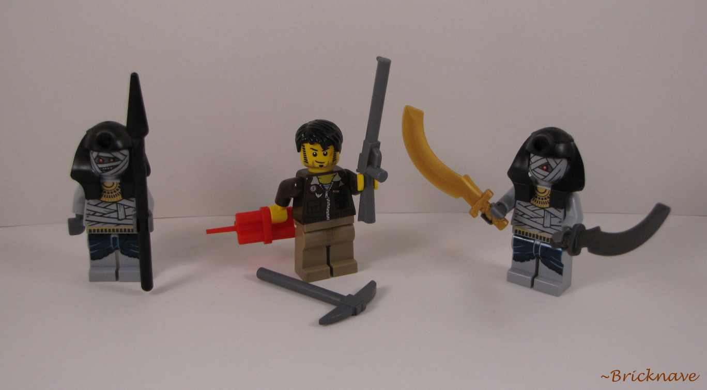
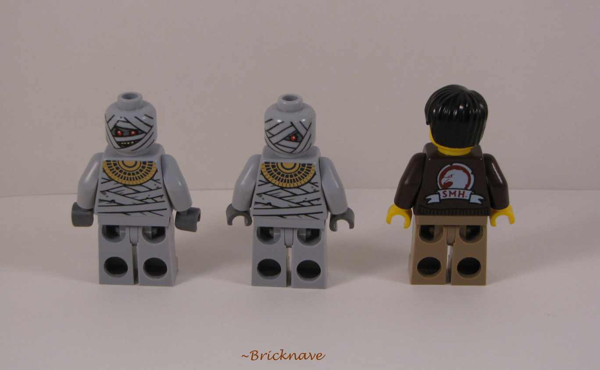
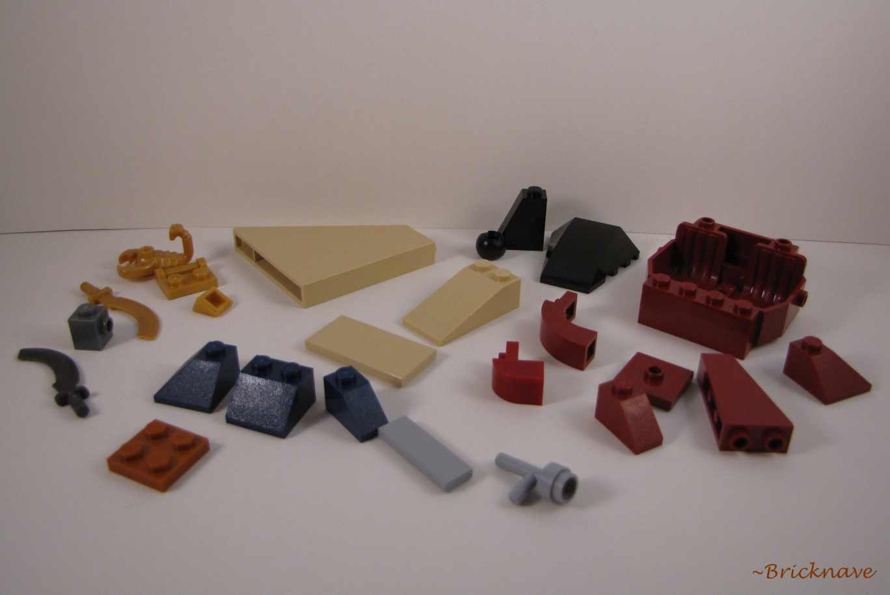
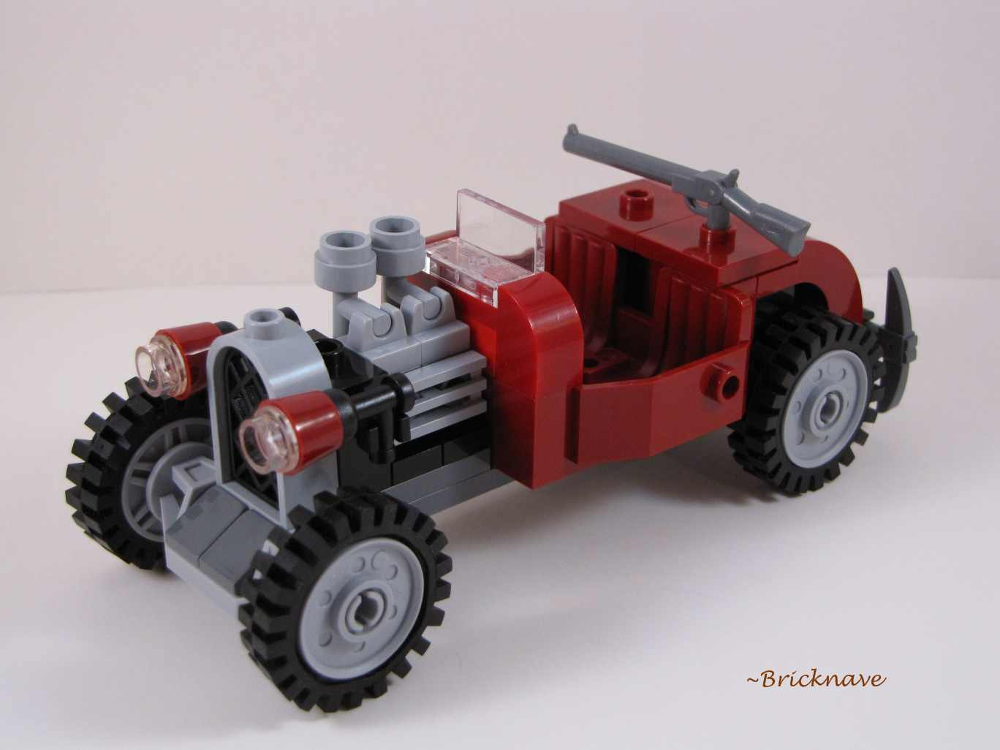
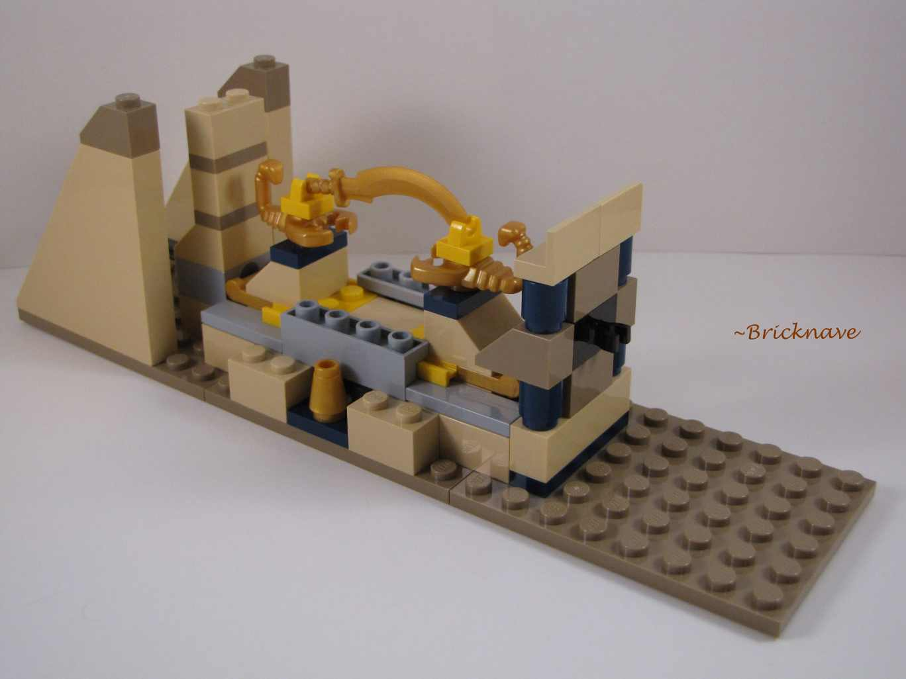
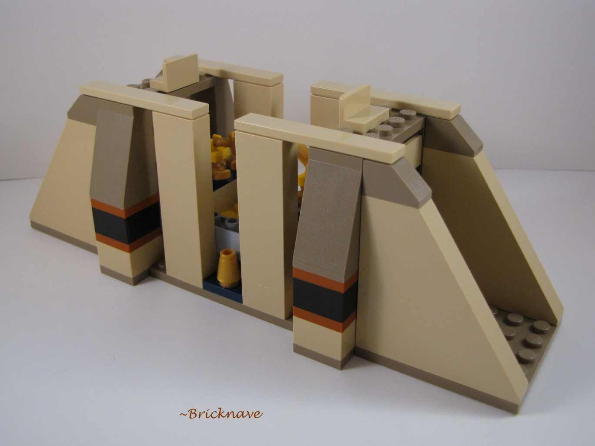
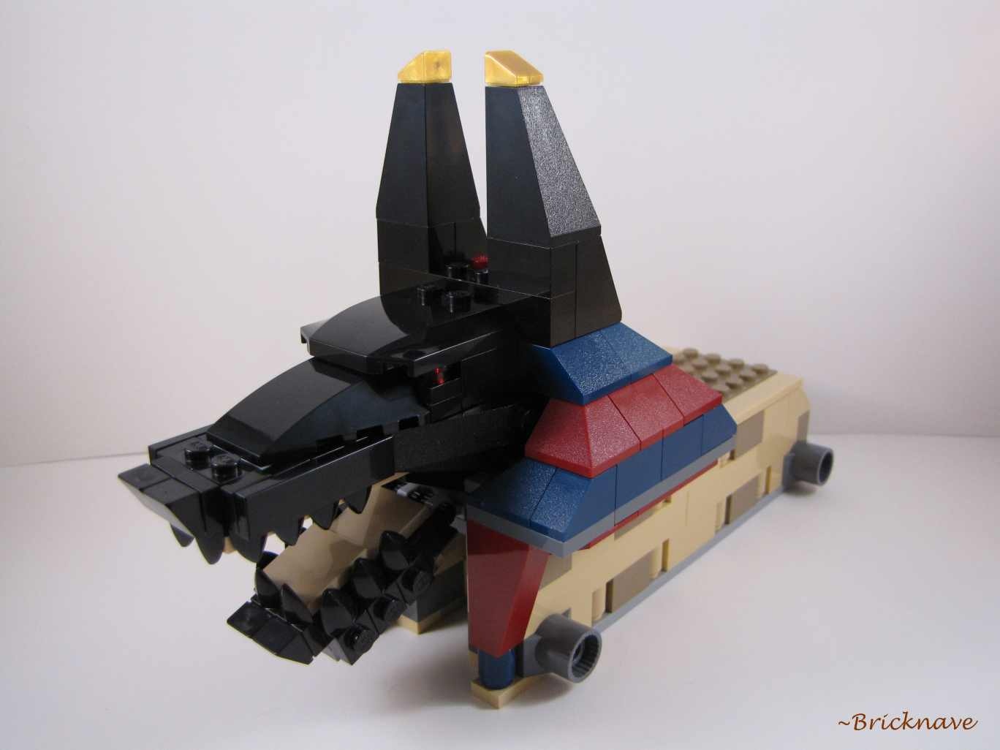
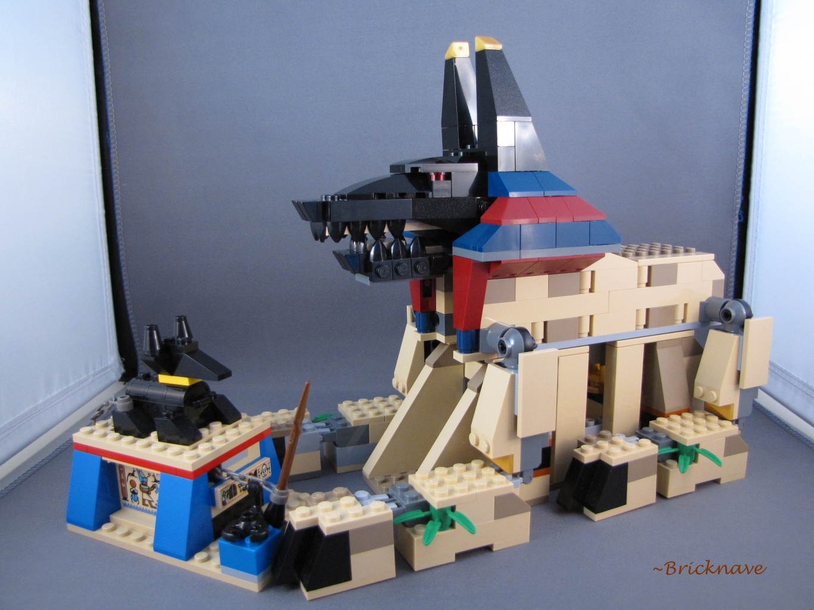
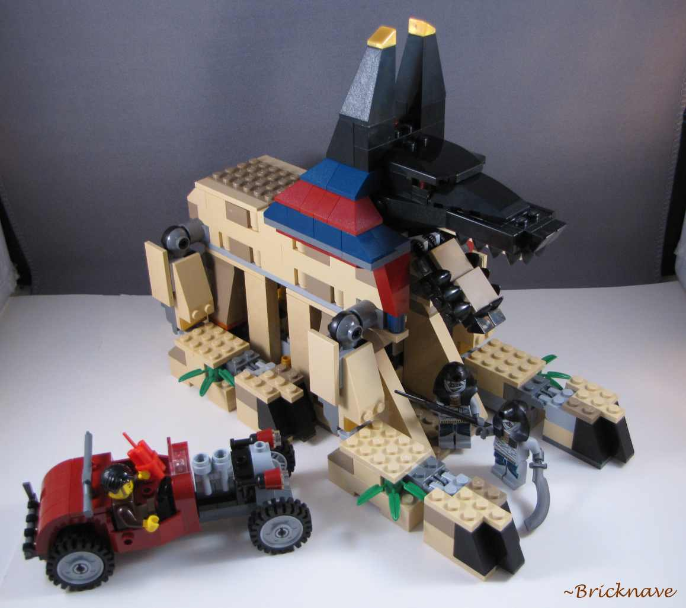
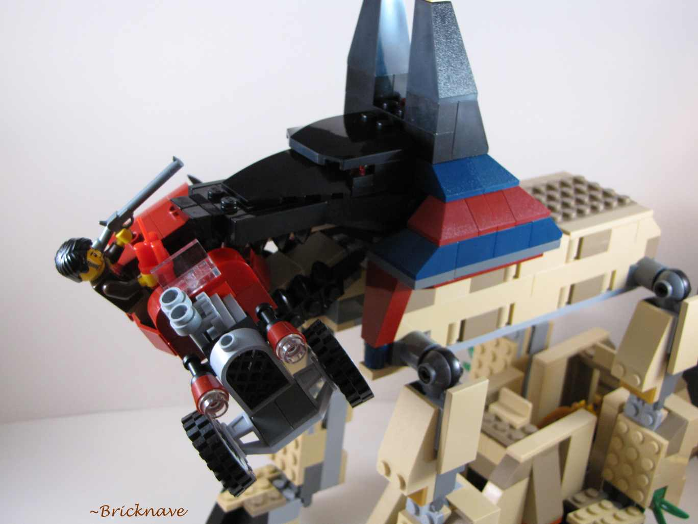

Information:
Set Name: Rise of the Sphinx
Set Number: 7326
Theme: Pharaoh's Quest
Year released: 2011
Price: $49.99
Piece Count: 527
Minifigures Included: 3
-Pieces-

The Minifigures included in this set are two mummy warriors and one hero (Jake Raines.)

The mummies each have two faces: A cyclops-like face and a face with both eyes revealed.

The pieces shown above are, in my opinion, the most interesting pieces of the set.
-The Car-

The car is fun both to build and to play with. The design balances symmetry with asymmetry.
However, there is a horizontal gap at the back of the car, but I don't mind it.
-The Sphinx-


The bottom half of the sphinx is a simple and engaging build.

The head of the sphinx is the section you must pay the most attention to when building.
The build is engaging until you reach the legs, which is quite repetitive.
I would rather the hind legs of the sphinx be different from the front legs, like a real jackal.

The small Anubis from the old Adventurers theme meets the big Anubis from the new Pharaoh's Quest theme.
-The Function-
The main function is the same concept as what you'll find in 7327 Scorpion Pyramid -- a plastic bundle of dynamite is "used" to blow up a wall in order to get to the treasure.
-Overall Set-


The overall build is very engaging, except for the legs.
This set also contains a lot of good pieces, such as the dark red jeep cabin and the 2x2 jumper plate.
As far as entertainment goes, the Anubis sphinx monster is good to pose for photo fun, while kids can have a blast with the dynamite function.